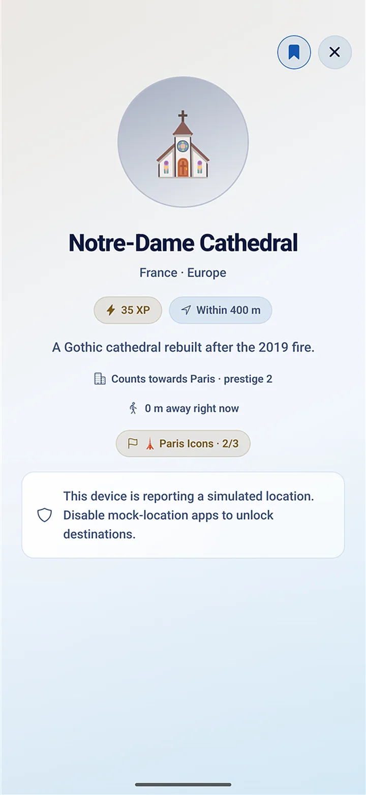
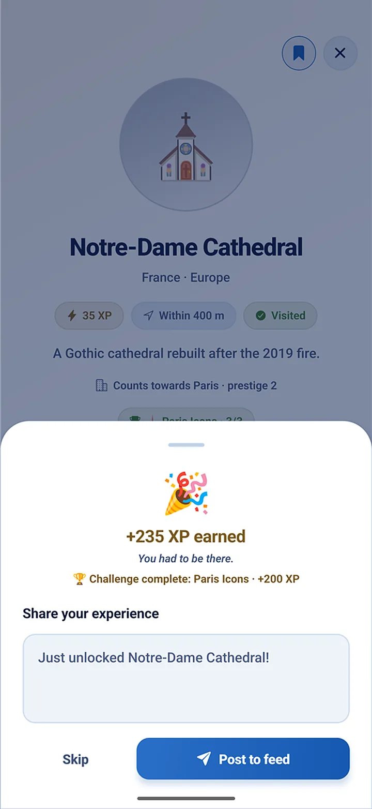
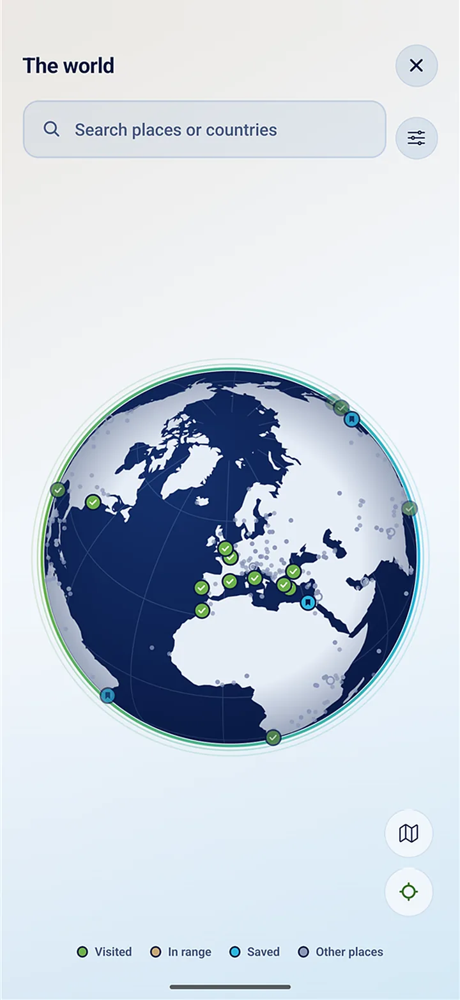
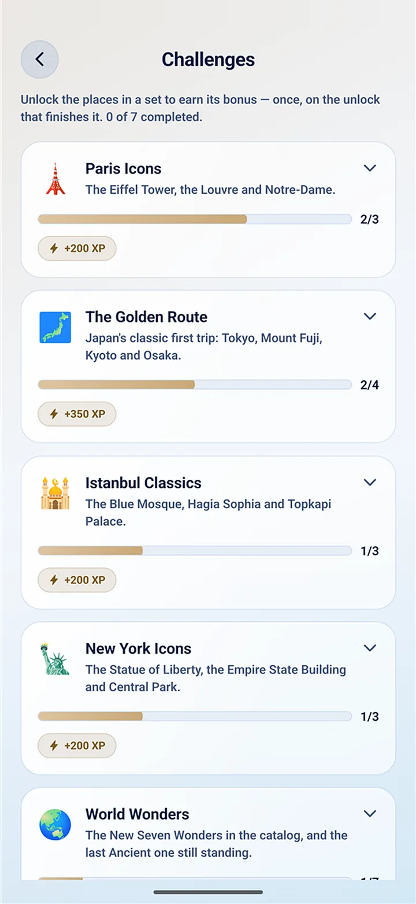
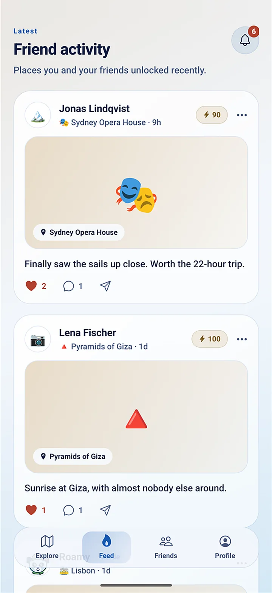
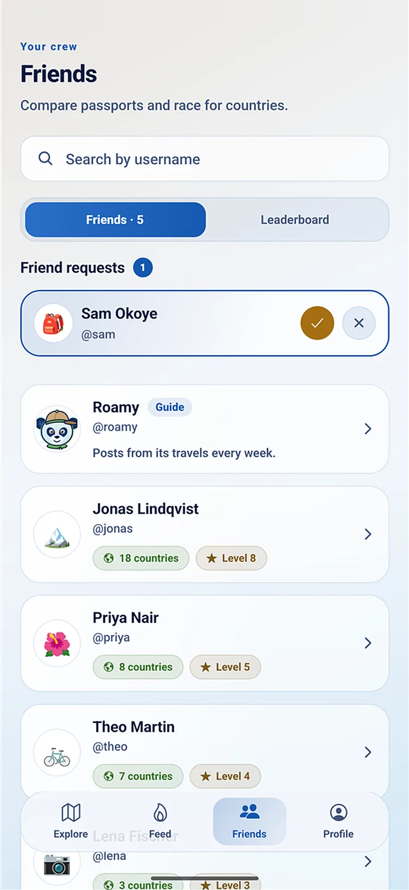
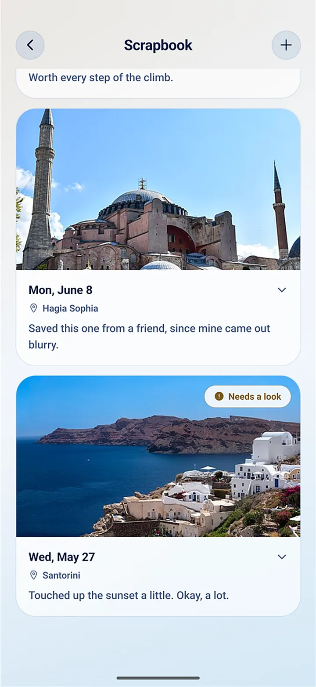
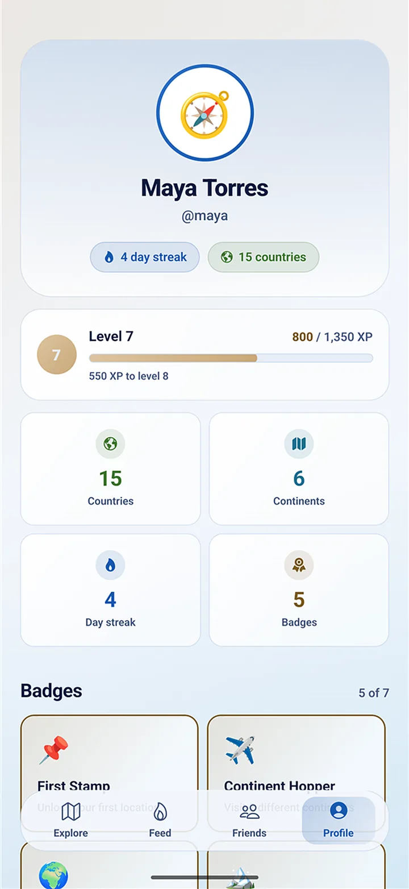
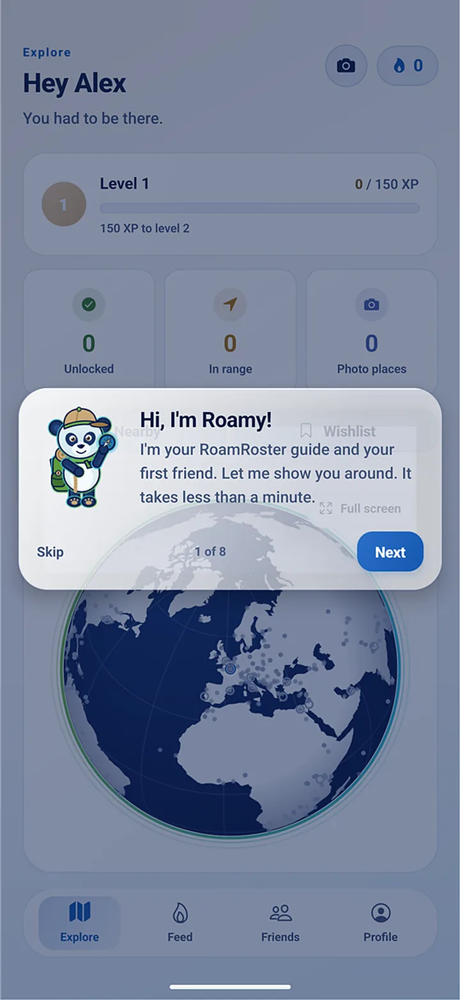

No check-ins from the couch.
Every unlock is decided on our server, not on your phone. When you tap Unlock, it checks:
- Where you are
- How accurate your GPS position is
- Whether your phone reports a simulated location
- Whether you could have travelled there since your last unlock
Your position is checked once. After that, only the place and the date are kept.


How it works
-
Go somewhere
Open the map to see cities and landmarks near you, from world-famous sights to local favourites.
-
Unlock it on the spot
When you're actually there, tap Unlock. Your GPS position is checked once, then only the place and the date are kept.
-
Build your roster
Earn XP and level up. Landmarks raise their city's prestige, and cities raise their country's.
What's inside
Screens from the app, with a demo account.

A map of everywhere you've been
Track your countries and continents, and see which cities you've only scratched the surface of.

Challenges, badges and streaks
Take on challenges for bonus XP, collect badges, and keep a day streak going while you travel.

A friends-only feed
Share your unlocks to a friends-only feed, and like and comment on theirs.

Travel with friends
Add friends, see where they've been, and compare progress on the leaderboards.

A scrapbook of your trips
Add your photos and they're placed on a personal timeline by the date they were taken.

Your roster
Your level, countries, continents, streak and badges, all earned from real visits.

Roamy, your guide
A blue panda who is your first friend and shows you around. You can skip the tour.
Put new places on the map
Found somewhere special? Photograph it on the spot to suggest it. Once reviewed, anyone can unlock it.
A wishlist for next time
Save the places you want to see so they're ready for your next trip.
Fair play, and your privacy
- RoamRoster has no ads and no analytics trackers.
- We don't sell your data.
- We don't keep a history of where you've been, only which places you unlocked and when.